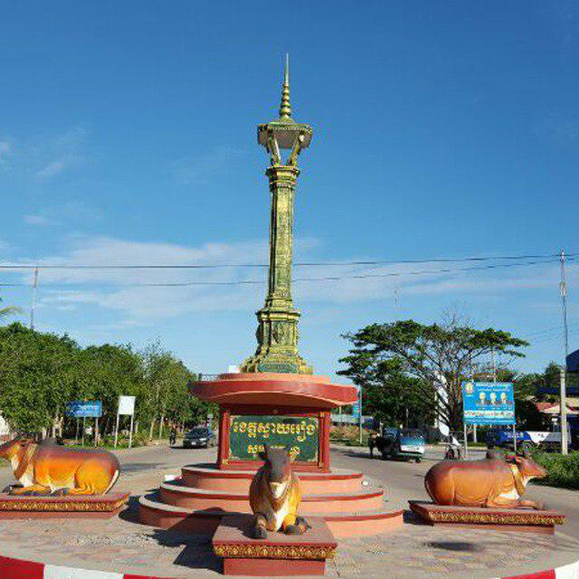

ការពិពណ៏នាអំពី ខេត្តនីមួយៗនៅក្នងប្រទេសកម្ពុជា
ទំព័រដើម
តាកែវ
ភ្នំពេញ
កែប
ព្រះសីហនុ
ស្វាយរៀង
កំពង់ធំ
បាត់ដំបង
ពោធ៏សាត់
សៀមរាប
រតនគីរី
មណ្ឌលគីរី
ក្រចេះ
ត្បូងឃ្មុំ
កំពង់ចាម
ព្រៃវែង
កណ្តាល
ឧត្តរមានជ័យ
កំពង់ឆ្នាំង
កំពង់ស្ពឺ
បន្ទាយមានជ័យ
កោះកុង
ប៉ៃលិន
កំពត
ស្ទឹងត្រែង
ព្រះវិហារ
ទំនាក់ទំនង
ខេត្តស្វាយរៀង

ព័ត៌មានសង្ខេបអំពីខេត្តស្វាយរៀង
> ស្វាយរៀង គឺជាខេត្តមួយដែលស្ថិតនៅអាគ្នេយ៍ (ខាងត្បូងឈៀងខាងកើត) នៃប្រទេសកម្ពុជា។ ហើយទីក្រុងខេត្តស្វាយរៀង មានឈ្មោះថា ទីក្រុងស្វាយរៀង ។ ខេត្តស្វាយរៀងមានព្រំប្រទល់ជាប់ប្រទេសវៀតណាមខាងកើតនឹងខាងត្បូង និងខេត្តព្រៃវែងខាងលិចនឹងខាងជើង។ តាមលក្ខណៈភូមិសាស្ត្រខេត្តស្វាយរៀង។ តំបន់នេះជាផ្នែកមួយនៃកសិកម្មរបស់កម្ពុជាជាចម្បង ដោយការធ្វើកសិកម្មជាសកម្មភាពសេដ្ឋកិច្ចសំខាន់។ ការដាំដុះស្រូវគឺជាការអនុវត្តកសិកម្មលេចធ្លោរួមជាមួយនឹងដំណាំផ្សេងទៀតដូចជាពោត ដំឡូងមី និងកៅស៊ូ។
> ខេត្តស្វាយរៀង មានប្រវត្តិដ៏យូរលង់នឹងបេតិកភណ្ឌវប្បធម៌ដ៏សម្បូរបែប។ ខេត្តស្វាយរៀងត្រូវបានគេស្គាល់ថាសម្រាប់តួនាទីដ៏សំខាន់របស់ខ្លួនក្នុងអំឡុងសង្គ្រាមវៀតណាម ជាពិសេសសមរភូមិស្វាយរៀងក្នុងឆ្នាំ១៩៧១។ ខេត្តនេះក៏មានវត្តអារាម និងកន្លែងប្រវត្តិសាស្ត្រជាច្រើនដែលទាក់ទាញភ្ញៀវទេសចរផងដែរ។ ស្វាយរៀងបានឆ្លងកាត់ការអភិវឌ្ឍន៍មួយចំនួន រួមទាំងការកែលម្អហេដ្ឋារចនាសម្ព័ន្ធ និងការតភ្ជាប់ផ្លូវគមនាគមន៍ផងដែរ។ សាកលវិទ្យាល័យស្វាយរៀង បង្កើតឡើងក្នុងឆ្នាំ២០០៧ ផ្តល់ឱកាសសិក្សាថ្នាក់ឧត្តមសិក្សាដល់និស្សិតក្នុងស្រុក។ ខេត្តស្វាយរៀង ផ្តល់នូវទិដ្ឋភាពនៃជីវភាពរស់នៅបែបជនបទរបស់ខ្មែរ ជាមួយនឹងទេសភាពកសិកម្ម និងសារៈសំខាន់ជាប្រវត្តិសាស្ត្រ។ ខេត្តស្វាយរៀងជាកន្លែងមួយដែលភ្ញៀវទេសចរអាចស្វែងយល់ពីជនបទ ស្វែងយល់ពីវប្បធម៌ក្នុងតំបន់ និងទទួលបានបទពិសោធន៍ពីសម្រស់ធម្មជាតិនៃតំបន់។
> ខេត្តស្វាយរៀង មានចំនួន ៨ ស្រុក/ក្រុង :
- ក្រុងបាវិត
- ស្រុកស្វាយត្នោត
- ស្រុកកំចាយមារ
- ស្រុករំដោះស្រែ
- ស្រុករំដួល
- ស្រុកស្វាយចេក
- ស្រុកជ្រៃសែន
- ស្រុកស្វាយរៀង